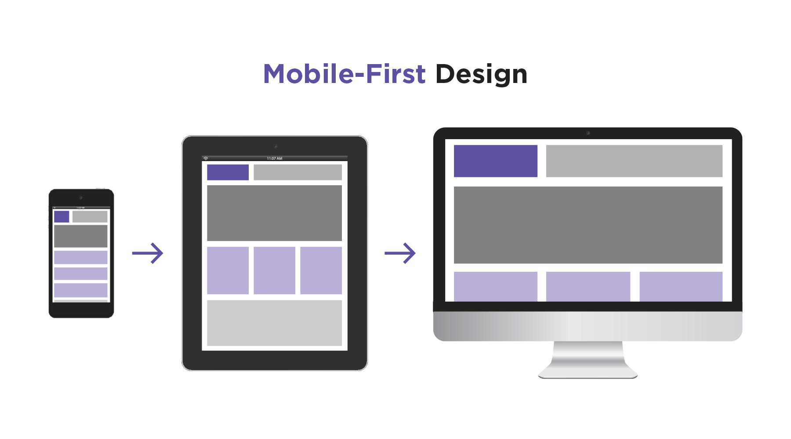
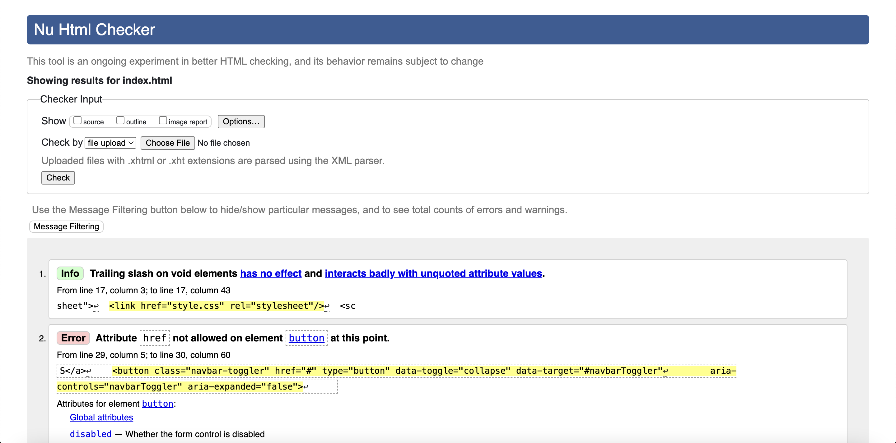
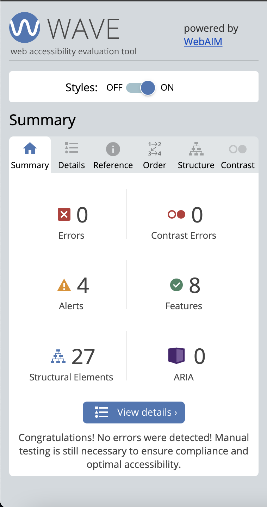
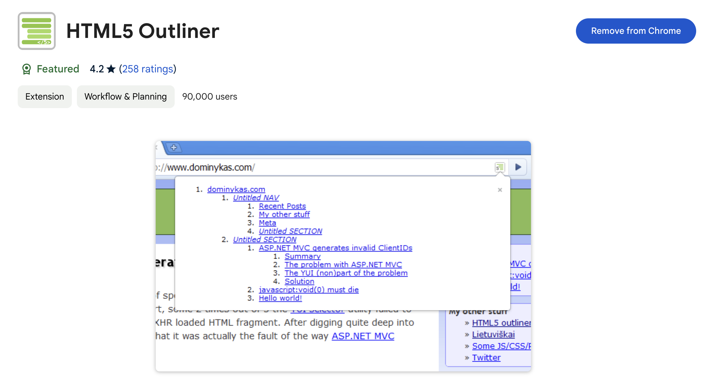

How can you implement Universal Design?
Mobile First Development
This type of development ensures that sites are responsive, or able to fit the screens of different devices automatically and display the content in a way that people are still able to understand it. Due to the fact that mobile internet usage surpassed desktop usage in 2016, mobile first development is more important than ever.
Mobile-first design means that web developers start the product design from the mobile end, which exists with more restrictions. They then expand its features and translate them towards a tablet and desktop version or other devices that may need a different set of dimensions.
HTML Elements
Semantics
In the past, code only had to be understood by the developer. These days, its way better to practice using semantic elements, or elements that communicate to the developer and the user about what each code snippet is used for. For example, developers used to use <div> to section out different parts of a website, but now developers are encouraged to used the following containers for different parts of their website:
<header>→ information that appears at the top of a site<nav>→ navigation bar for article or website<main>→ main webpage information<aside>→ side or extra information on a website<footer>→ information that appears at the bottom of each webpage
As see above, you can assume the content of each section based on the name of the item. When we write semantically correct HTML, we’re letting the browser know what type of content it’s dealing with and how that content relates to other content. By doing this, assistive technology is more easily able to do its job because it has a structure that it can work with.
Screen Reader Only
There are some elements that visually are very easy to understand what purpose they perform, but with a screenreader it isn't as clear. That is why you can create items to only appear for screen readers.
In order to do this, you first need to create a CSS class with the following design specifications:
.sr-only {
border: 0;
clip: rect(0, 0, 0, 0);
height: 1px;
margin: -1px;
overflow: hidden;
padding: 0;
position: absolute;
white-space: nowrap;
width: 1px;
}Then, you need to add this specific class for the item that is only for screen readers:
<h2 class="sr-only">
Skip Navigation
A skip navigation link is a technique for facilitating similarly efficient access for users with certain disabilities. A skip navigation link is implemented by placing a named anchor at the point on the page where the main content begins.
To do this, first input the following code into your CSS file:
.skip-link {
background: black;
color: #fff;
font-weight: 700;
padding: 4px;
position: absolute;
transform: translateY(-200%);
}
.skip-link:focus {
transform: translateY(0%);
}
.skip-link {
transition: transform 0.3s;
}Then, you need to add this line of code to the start of the <body> part of your code.
<a class="skip-link" href="#maincontent">Skip to main content</a>
To utilize this on your webpage, navigate to the page that has implemented skip navigation, then click the "Tab" button, and the skip navigation link will appear.
Testing for Accessibility
Nu HTML Checker
This tool helps you catch unintended mistakes in your HTML, CSS, and SVG. The validation program compares the HTML code in the web page with the rules of the accompanying doctype and tells you if and where those rules have been broken.
WAVE Web Accessibility Evaluation Tool
WAVE is a suite of evaluation tools that helps authors make their web content more accessible to individuals with disabilities. WAVE can identify many accessibility and Web Content Accessibility Guideline (WCAG) errors, but also facilitates human evaluation of web content.
Chrome HTML Outline Extension
This tool generates a navigable page outline with heading and sectioning elements, in order to make sure your page layout and heirarchy makes sense.